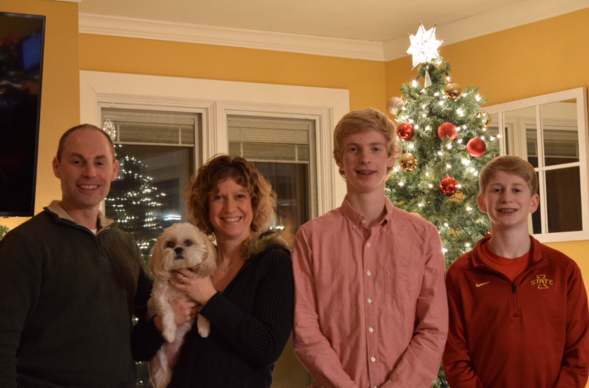
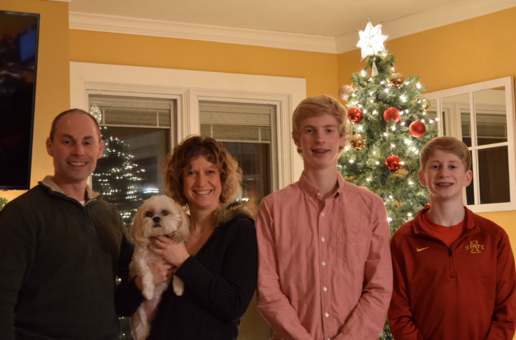
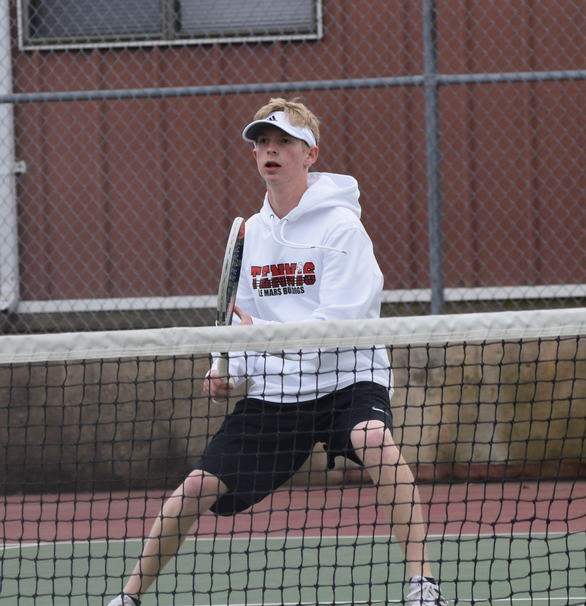
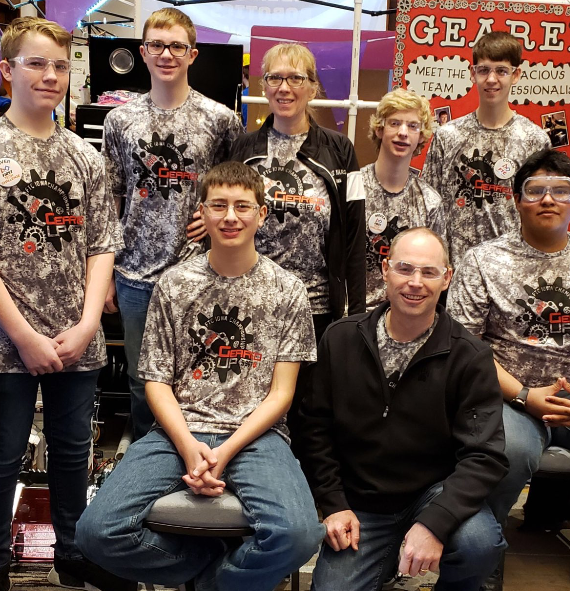
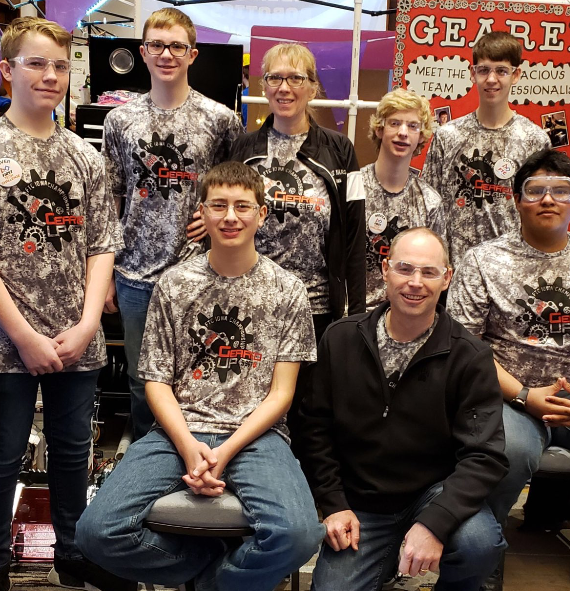

Zach Wingert
About me
Hello! My name is Zach Wingert. I am 19 years from Le Mars, Iowa. As of 2019-2020, I am a freshman studying software engineering at Iowa State. So far, I am loving it! This is my first taste of creating a website so bear with me!
Family
My family lives in LeMars, Iowa. My mom is a teaches the elementary talented and gifted program at LeMars Community Schools. My dad is the high school and middle school technology coach for LeMars Community. I have a younger brother is a junior at LeMars Community Schools. And I can't forget about our dog Molly! Schools.
 

High School
I graduated from Le Mars Community High School in 2019. I had a 3.9 GPA and graduated in the top 10% of my class! In high school, I was involved in many things such as calc club, DLIT, large group speech, robotics, quiz bowl, tennis, cross country, National Honor Society and Fellowship of Christian Athletes.
 
